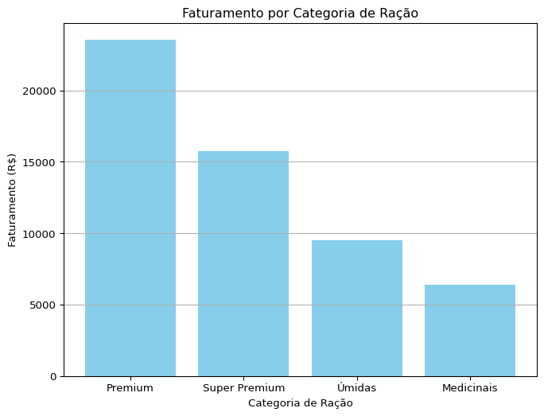
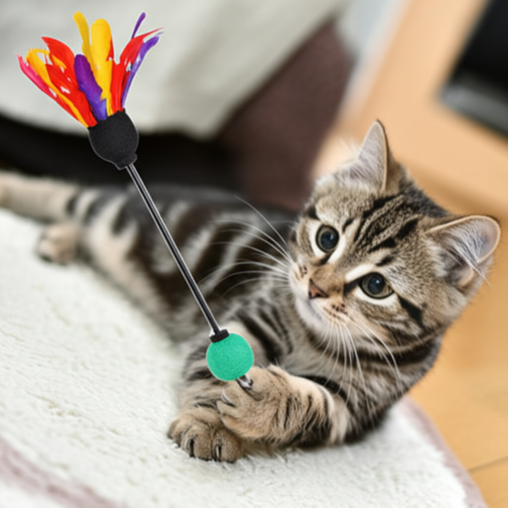

Ganhos em vendas de arranhadores
Gatito Petshop
Resumo Executivo
Faturamento de R$ 127.845,00 em março de 2025, um aumento de 8,3% em relação ao ano anterior.
Ração lidera as vendas, representando 62% do faturamento.
Ticket médio de R$ 98,35, com um aumento de 3,7% em relação ao mês anterior.
Faturamento com Rações por Categoria

Faturamento com Arranhadores por Categoria
Arranhadores Torre: R$4.860,00
Arranhadores Parede: R$1.440,00 (Estoque Crítico)
Arranhadores Tapete: R$2.700,00
Faturamento com Brinquedos

Um gato brincando com um brinquedo
Produtos de Reposição Urgente
Ração Super Premium Sabor Salmão
Arranhadores de Parede
Brinquedos de Pena
Desempenho por Canal de Venda
Loja Física: R$76.707,00 (60% do total, Ticket Médio: R$112,45)
E-commerce: R$38.353,50 (30% do total, Ticket Médio: R$85,60)
Marketplace: R$12.784,50 (10% do total, Ticket Médio: R$79,90)
Diferenciais Competitivos
Variedade de Produtos
Atendimento Especializado
Percepção de Qualidade Superior (apesar de preços 5% maiores)
Impacto das Ações de RH
Foto de uma equipe feliz
Indicadores Financeiros vs Metas
Faturamento Bruto: R$ 127.845,00 (Meta: R$ 125.000,00)
Lucro Líquido: R$ 35.796,60 (Meta: R$ 33.750,00)
Margem de Lucro: 28% (Meta: 27%)
Próximos Passos e Recomendações
Investir em estratégias de vendas online (cupons, amostras).
Explorar o crescimento da categoria de brinquedos no e-commerce.
Otimizar serviços de banho e tosa (alta demanda e satisfação).
Reação dos Gatos aos Produtos
Gato feliz usando um arranhador